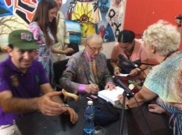

El poeta ruso renace en La Habana.
Miradas cubanas José Antonio Michelena 7 junio, 2016 Versión en inglés

Invitado a participar en el Festival Internacional de Poesía, viajó a Cuba Evgueni Evtushenko. Seductor, simpático, y travieso como un adolescente de 83 years, el poeta ruso “actuó” en La Habana dos meses después que lo hicieran The Rolling Stones, y aunque su mito es tan antiguo y sostenido como el de la banda británica, y su carisma no es inferior al de Mick Jagger, sus lecturas no llenaron ninguna plaza ni estadio —como tantas veces lo hizo en Rusia décadas atrás— pero su presencia y su voz imantaron los sitios por donde pasó, inscribiendo un nuevo suceso en la isla este 2016.Diferentes en su diseño escénico y su contenido, en tanto se trataba de públicos distintos, fueron las lecturas que realizó Evtushenko en la sala Villena de la Unión de Escritores y Artistas de Cuba (UNEAC) y en la Casa del Alba. La primera consistía en una lectura colectiva entre colegas; mientras la segunda, en un espacio más abierto, deparaba sorpresas.
En la Sala Villena
Lo primero que llamó mi atención en la sala Villena fue la tímida acogida del gremio artístico. Esperaba encontrarme el salón colmado y sucedió lo contrario. El autor siberiano fue el último en intervenir esa tarde, después de Haili Karahan (Turkey), Barnard Laye (Benin), Álvaro Salvador (Spain), y Pedro de Oraá (Cuba). Sus primeras palabras fueron de homenaje a su esposa Masha, allí presente, a quien dedicó la lectura de un poema de amor. Fue como entrar, de repente, en una tormenta: del tono confesional, casi a media voz, con que conversaba, pasó a exclamar sus versos en un torrente, como si estuviera ante una multitud y tuviera que conquistarla. Así dijo los primeros cinco cuartetos, hasta hacer un cambio de tono, como un anticlímax, y susurrar el primer verso de la última estrofa para después retomar la pasión discursiva en los tres versos finales y terminar muy arriba al pronunciar: “Te amo más que al mismo amor”.
Luego Evtushenko leyó un poema en el que desarrolla, en abundancia, la ironía. Es un texto de 2004 pleno de humor mordaz que alude a la situación social y humana de la nación rusa en las últimas décadas. La composición de forma narrativa, con diálogos intercalados y una diversidad de voces, permite una lectura dramatizada y muestra la amplitud de recursos del poeta, actor y director cinematográfico.
En el epílogo de la jornada los asistentes pudieron adquirir un ejemplar de su libro Manzanas robadas, darse el privilegio de tener la firma y dedicatoria del autor y apreciar su trato amable, de amistosa cercanía, que pone a un lado la fama del divo.
En la Casa del Alba
Vestido como una estrella de rock asistió Evtushenko a la Casa del Alba, en el Vedado capitalino para encontrarse con un público próximo al centenar de personas, en el que predominaba la comunidad rusa. Esa circunstancia marcó la lectura.
La alta presencia de compatriotas lo animó a una lectura bilingüe (ruso y español) del extenso poema dramático “La ejecución de Stenka Razin”. Pero realmente era difícil, para los oyentes no bilingües, seguirla de esa manera a pesar del elevado oficio del poeta para expresar sus textos y el esfuerzo que hacía para mantener el ritmo apropiado. However, la emotividad del discurso poético y la riqueza de su contenido mantuvieron en vilo al auditorio.
Para aligerar la carga, el escritor incluyó en el programa los dos poemas citados anteriormente: el neorromántico “Te amo más que alanaturaleza”y el satírico “En el país llamado Más o Menos”, los cuales crean un relajado clima de complicidad con los espectadores.
Al cierre de la jornada, la lectura del poema de tono elegíaco “La llave del Comandante”, dedicado al Che Guevara, escrito originalmente en español, estableció una conexión con el mural de iconos latinoamericanos que tenía Evtushenko a su espalda. A mi lado, una joven rusa revisaba las imágenes en su teléfono móvil. Allí guardó la foto del famoso escritor del cual, Surely, le habría hablado su padre: un poeta que actuaba ante millares de personas en Moscú y Leningrado cuando ella aún no había nacido.
También yo guardé la imagen del poeta que llenaba estadios como una estrella de rock en los tiempos en que añoraba estar en el concierto de una estrella de rock. Pero pasaría mucho tiempo para que se cumpliera ese sueño, y ocurrió el mismo año en que pude estrechar la mano del escritor que burló el gulag, el estalinismo, los odios, y las férreas fronteras soviéticas, se hizo ciudadano del mundo, fue aplaudido por las multitudes en todas partes y sus palabras llegaron hasta el oído de Dios mismo. (2016)